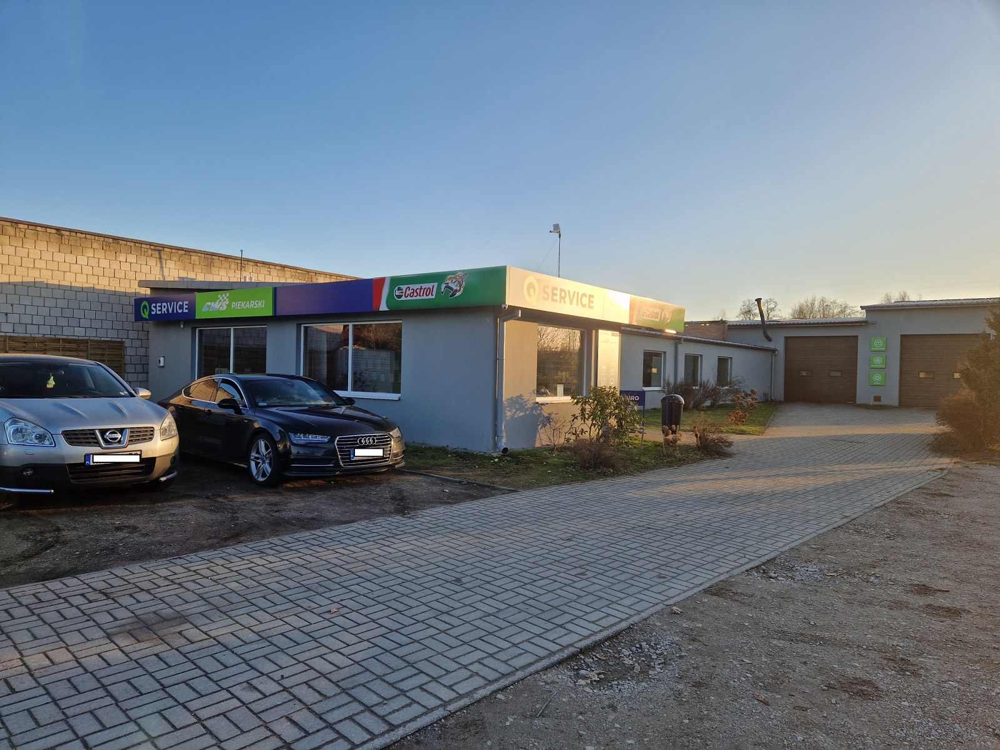
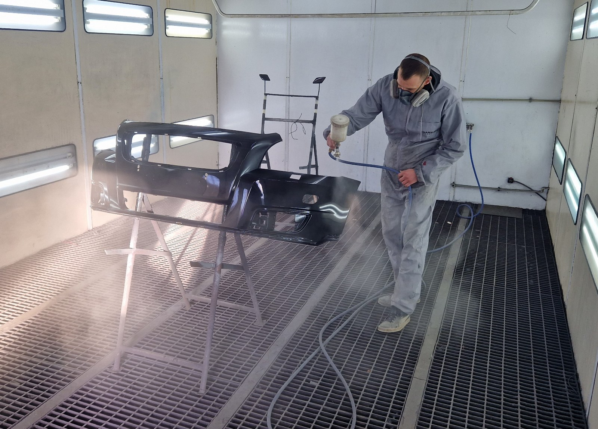
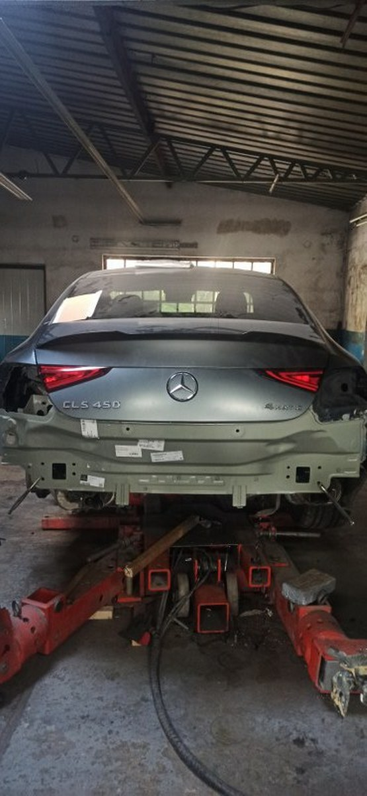
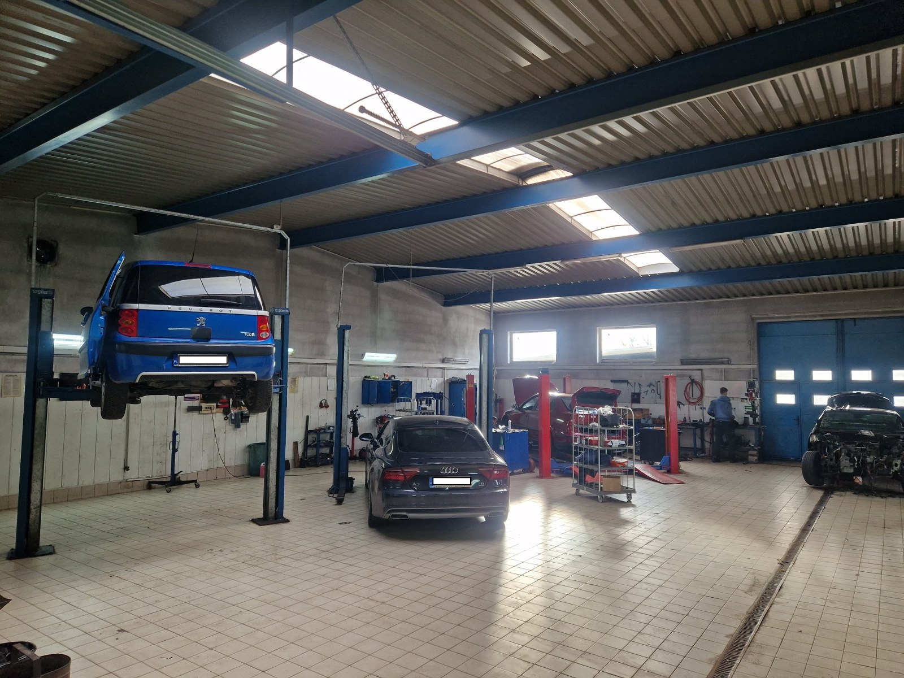
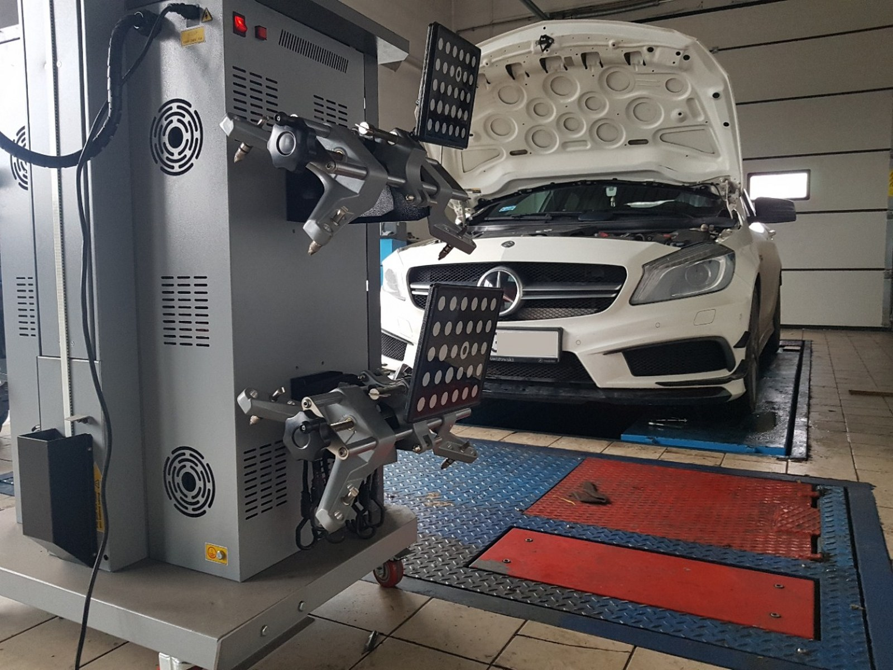
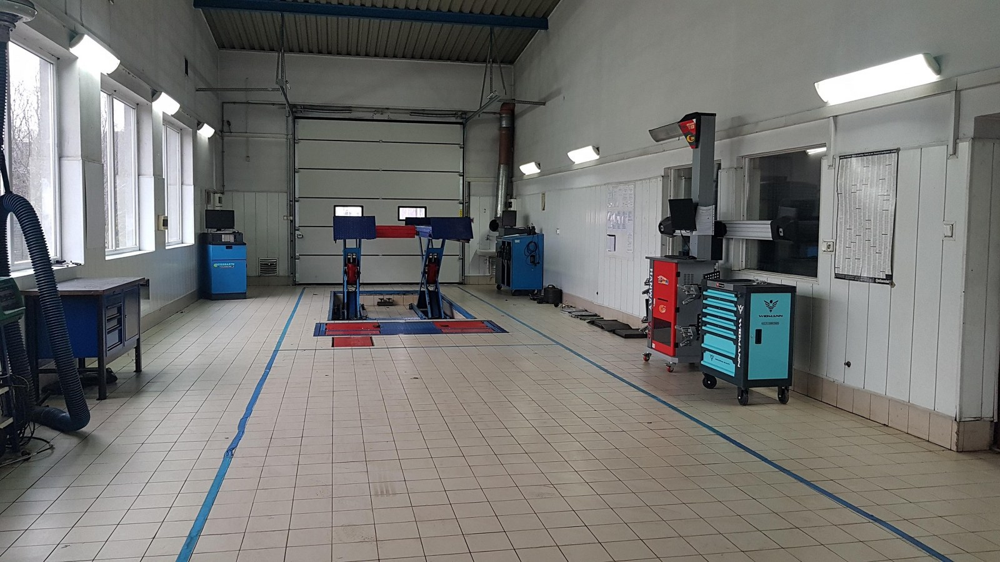
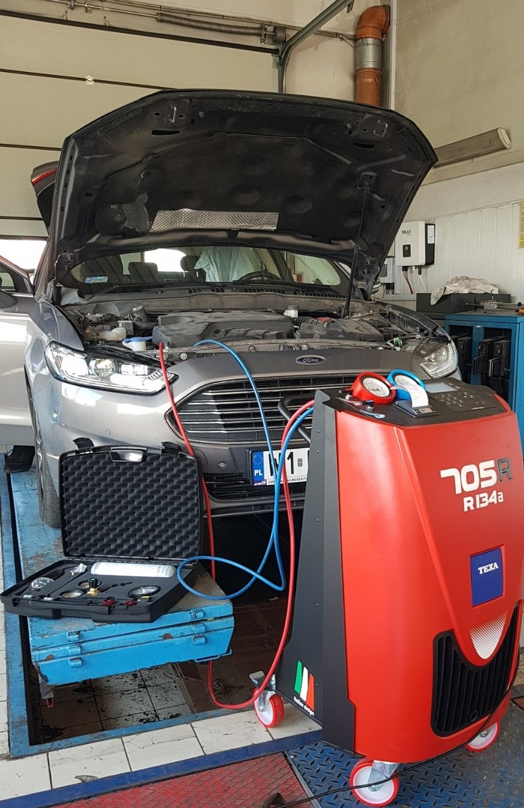
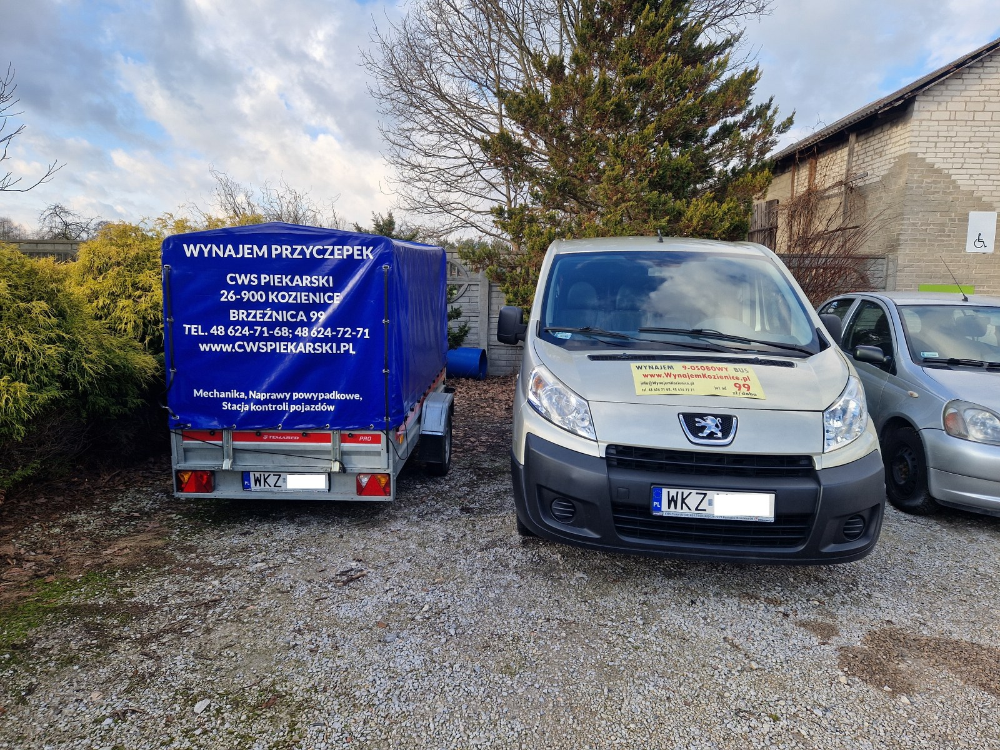
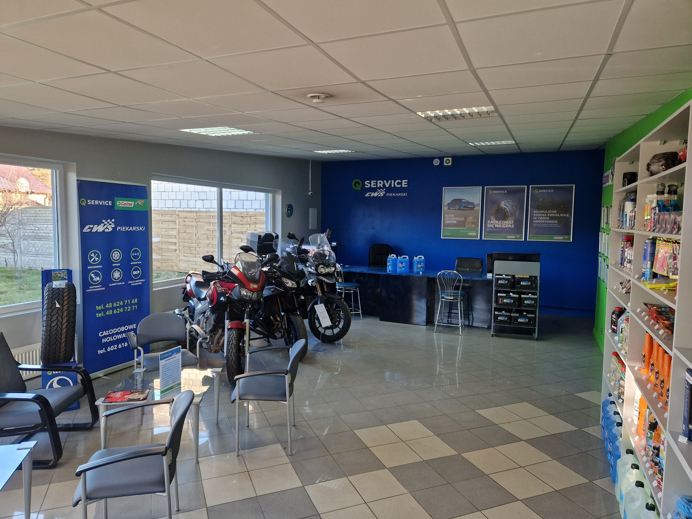

Nasz Zakład: Siedziba CWS Piekarski w Kozienicach (Brzeźnica 99) – zapraszamy do skorzystania z naszych usług.

Lakierowanie zderzaka: Precyzyjne usuwanie zarysowań i komputerowy dobór lakieru w naszej kabinie.

Trudne naprawy blacharskie: Wykorzystujemy najnowsze technologie i narzędzia do naprawy najnowocześniejszych konstrukcji aut.

Hala napraw: Nasze stanowiska serwisowe wyposażone w nowoczesne podnośniki i narzędzia warsztatowe.

Geometria kół: Profesjonalne ustawianie zbieżności zawieszenia gwarantujące bezpieczeństwo jazdy.

Stacja Kontroli Pojazdów: Nasza nowoczesna linia diagnostyczna pod patronatem DEKRA w pełnej gotowości.

Serwis Klimatyzacji: Diagnostyka szczelności i nabijanie klimatyzacji najnowocześniejszymi urządzeniami.

Wynajem przyczepek: Oferujemy solidne przyczepki transportowe Temared – idealne do przewozu większych ładunków.

Biuro i poczekalnia: Miejsce, w którym możesz wygodnie poczekać na zakończenie usługi i napić się świeżej kawy.